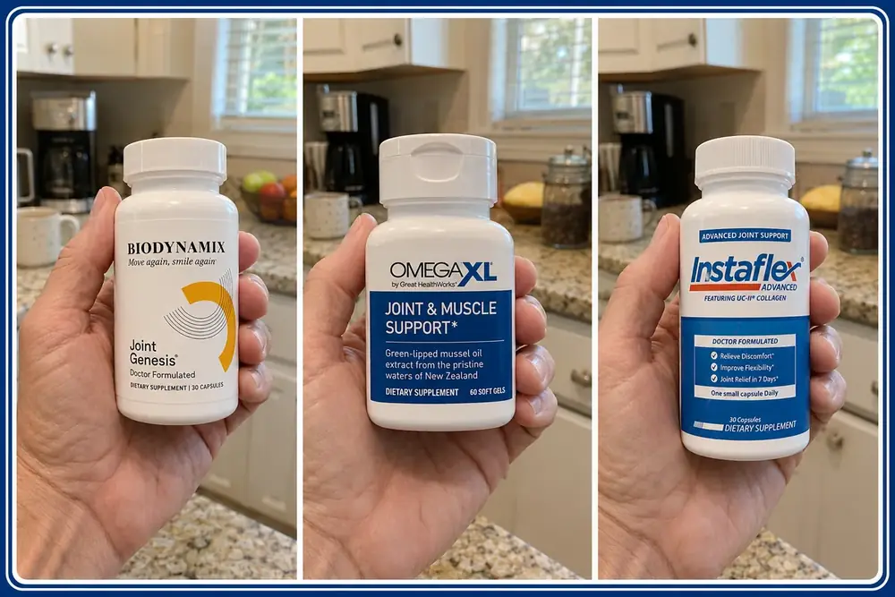
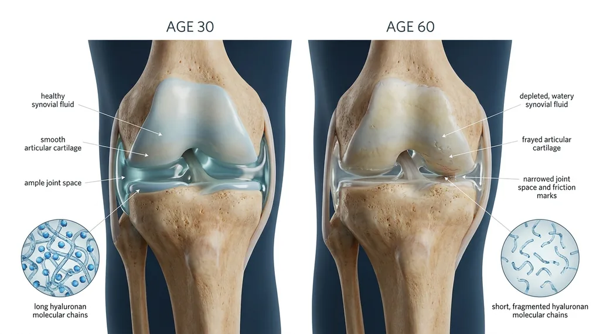
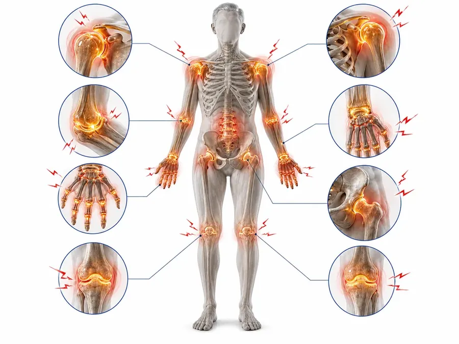
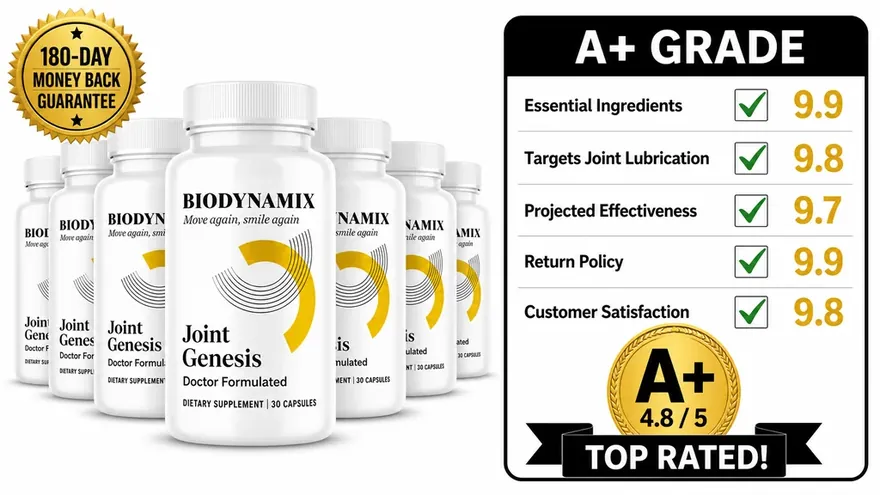
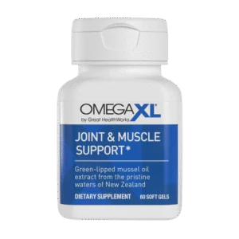
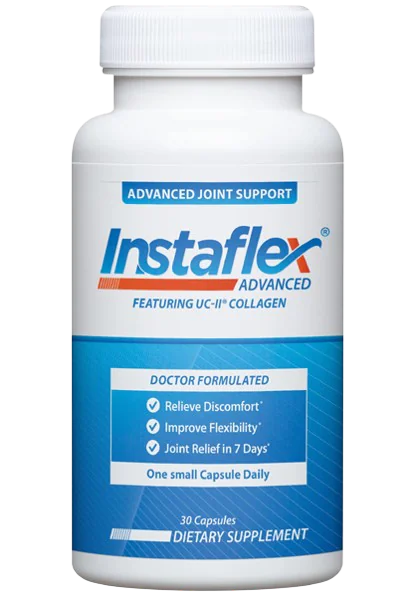

Three of the most-searched joint formulas in America, scored on the same five criteria — plus one question this category never gets asked.
Reviewed by our editorial team · 3 formulas · 5 scoring criteria
Updated July 26, 2026

Around 45,000 Americans a month type some version of the same question into Google:
That's a strange amount of searching for a product nobody believes in.
Read what those people actually write — in the reviews, in the forums, in the complaint threads. The surprising part isn't that they're angry. Most of them aren't. The single most common story in this entire category, by a wide margin, goes like this:
“It worked. For about a month. Then it stopped getting better.”
— the most common review we found, written a thousand different ways
Read enough of those and you notice something the star ratings cannot show you. That is not what a scam looks like.
A product that does nothing does nothing on day one. It does not hand you four good weeks first.
So “it’s fake” cannot be the answer. Yet that is the answer almost every review in this category settles on, because it is the only one they have.
This year we went looking for a better answer.
We did not do it by testing harder. We did it by asking ourselves one uncomfortable question:
Have all of us — including this site, in past years — been scoring these formulas on the wrong thing?
Here is what made us ask. Line up Omega XL, Instaflex, and every glucosamine bottle in the pharmacy aisle. They disagree about almost everything: the ingredient, the dose, the price, the marketing.
They agree about exactly one thing:
They all aim at the same target.
So we kept looking at that plateau — the four good weeks, then the wall. And it stopped looking like three products failing. It started looking like three products succeeding at something that was never the whole problem.
What follows is what changed our scoring. Then the ranking, and the reason it came out in the order it did.
Scientists Identify the Real Cause of Age-Related Joint Pain
This is not a new discovery. Rheumatologists have been measuring it for decades. What has not caught up is the supplement aisle.
It isn't that the fluid runs out. It's that it stops being thick.

Imagine the fluid inside your knee as honey.
Thick, smooth, and slippery… forming a cushion that keeps your bones from rubbing together and absorbs the impact of every step.
Now imagine that same knee years later. The fluid is still there — but now it has the consistency of water.
It hasn’t disappeared… but it no longer works the same way. It can’t cushion or protect like before. And with every step, the bones begin to rub.
That’s what happens over time.
The problem isn’t the amount of fluid. It’s the loss of its quality.
The substance that gives this fluid its thickness is called hyaluronan — a natural molecule that holds water, much like honey holds its shape.
As we age, two things happen.
First, there is less of it: In human knees, hyaluronan levels drop about 10.5% every decade.1 By age 60, you may have up to 63% less — meaning less cushioning and less protection in your joints.
Second, what remains becomes weaker: The long, strong molecules break into shorter pieces.2 And shorter pieces can’t hold as much water.
Less hyaluronan means less water — turning a thick, protective gel into a thin fluid that no longer keeps your joints properly separated.
You feel this most in the morning.
The first steps out of bed feel stiff, tight, and painful.
Doctors call this the “gel phenomenon” — stiffness after resting that improves once you start moving.3
During the night, without movement, this thinner fluid settles and leaves parts of the joint unprotected.
In a healthy joint, the “gel” stays in place, keeping everything protected.
In a worn joint, that protection is gone.
As you move, the fluid spreads again — and the pain eases.
But here’s the key point:
You’re not restoring the “honey.” You’re just moving water around.
The relief comes… but it doesn’t last.
And the next morning, it starts all over again.
And this doesn’t affect just your knees — it can happen in all your joints.

Wherever that fluid thins, the same thing happens. Fingers that will not open a jar. A wrist that hurts after an hour at the keyboard. A shoulder that protests when you reach up for a plate. Different joint. Same problem.
And it costs more than movement. The night you sleep badly because you cannot get comfortable. The invitation you turn down. The moment you ask someone else to carry the bag. Most people never mention that part.
Which leaves the only question that matters. Can anything change the thickness of that fluid?
In 2002, ABC News sent Connie Chung to a Japanese farming village called Yuzurihara. The people there were still working the fields in their 80s, with joints that did not match their age. The town doctor had spent years studying why. His answer pointed at one molecule, the same one on this page. That molecule appears again further down.
The Truth About Joint Supplements:
Now look at what that means for the shelf.
The swelling, the heat, the ache: that is tissue reacting to bone contact it was never built to take. So the inflammation is not the cause. It is the result.
Omega XL delivers green-lipped mussel omega-3s to calm inflammation. Instaflex leans on turmeric and boswellia, inflammation again. The glucosamine classics feed cartilage. Every one of them works on the parts around the fluid. None of them works on the fluid.
And they do help. Turning inflammation down is real relief, and we are not going to pretend otherwise. It is why Omega XL scores as well as it does further down this page. But it is aimed at the response, not at the cause. It also explains the most common complaint in this category: worked for a month, then plateaued. An anti-inflammatory can only reach so far. In about four weeks it hits that ceiling. Stop taking it and the fluid is still thin.
The alternatives are not cheap either. Between prescriptions, cortisone injections and specialist visits, plenty of people spend $200 to over $1,000 a month. Those quiet the symptom too.
So this year we added a column the usual reviews do not have. Not "does it reduce inflammation?" — every one of them does that. Does it do anything about the fluid?
One of the three below scores on it. That single column is why the ranking came out the way it did.
Here are the five criteria every formula on this page was scored against, including that last one.
How We Evaluated the Products
To create this review, I evaluated each product based on the following key factors:
Active ingredients: I checked whether the ingredients are clinically studied, safe, and present at a dose that is actually disclosed on the label.
Mechanism: I checked whether the formula addresses joint lubrication, or only masks inflammation. This is where most of the category fell apart.
Effectiveness: I looked at results reported by real users past the one-month mark — not first-week enthusiasm.
Value for money: I compared real cost per serving against the benefits each formula actually covers.
Guarantees: I reviewed whether the manufacturer offers a money-back guarantee — and how hard it is to actually use it.
Top 3 Most Searched Joint Supplements This Month
Here is a side-by-side comparison of the most popular joint supplements people are using across the U.S. today, which provides a summary of our research and analysis:
| Product | Rating | Targets Lubrication | Guarantee | Verdict |
|---|---|---|---|---|
| #1 Joint Genesis | 4.8 / 5 | ✓ | 180 days | Recommended |
| #2 Omega XL | 4.1 / 5 | ✕ | Limited | With Reservations |
| #3 Instaflex Advanced | 3.2 / 5 | ✕ | Retailer-dependent | Not Recommended |
Scroll the table sideways on mobile. Full reviews below.
#1 Joint Genesis
by Biodynamix
4.8 / 5
Total Ranking
A+
Overall Grade

Pros
- The single most important thing it does that the other two don't do: it targets the synovial fluid itself, through Mobilee® — a patented, hyaluronan-rich complex.
- You'd assume a formula built around lubrication skips the inflammation side — wrong. Boswellia serrata and ginger are in here too, so you're not trading one problem for the other.
- What we look for on any joint label: all four key ingredients from our checklist, listed right on the label.
- The truth most labels are built to hide: there is no proprietary blend here. Every dose is printed, so you can check what you're actually paying for.
- Vegan, non-GMO, gluten-free, made in the USA in an FDA-registered facility — nothing on the label you'd struggle to explain to your doctor.
- 180 days to decide — the longest return window of anything in this review, by a wide margin.
Cons
- Worth knowing: not on Amazon, not in stores. Official site only.
- When to expect anything: most people reported a change between weeks 3 and 5. This is designed to rebuild, not to numb.
- Not the right product for anyone looking to shut pain off tonight — it doesn't work that way, and the label doesn't claim it does.
Bottom Line: Recommended
Joint Genesis earned the top spot for one reason, and it has nothing to do with marketing. It is the only product here that works on the honey instead of replacing the parts.
Every other formula in this comparison works on inflammation or cartilage. Joint Genesis is built around Mobilee®, a patented complex rich in hyaluronan. It works on the synovial fluid itself — the gel that cushions the joint. That gel gets thinner with age.
It doesn't stop at the root cause. The formula also adds standardized Boswellia serrata and ginger root for day-to-day comfort. French maritime pine bark and BioPerine® round it out, for antioxidant support and better absorption.
In our review, the pattern was consistent: subtle in week one, clear by week four.
But the clearest sign in the feedback wasn't a pain score. It was the morning. People stopped noticing the first ten steps. The stairs hadn't changed. What changed was the little bargain they used to make with themselves before taking them. It just stopped happening. Nobody reports the moment a problem ends. They just notice, weeks later, that they've been taking the stairs normally.
Some supplements only take the edge off for a while. Joint Genesis is built to keep the joint comfortable and keep you moving. It also comes with a 180-day money-back guarantee — the longest in this comparison.

Joint Genesis is sold only through the official website. Retail and marketplace listings are not the real product.
Overall, Joint Genesis is our top choice for joint comfort and mobility in 2026.
Sold on the official site only · 180-day return window · free shipping on multi-bottle orders
* Results may vary and do not necessarily reflect typical results of using this product. Please visit product website for more information.
#2 Omega XL
by Great HealthWorks
4.1 / 5
Total Ranking
A-
Overall Grade

Pros
- The honest truth, and we'll say it plainly: PCSO-524® is a real patented green-lipped mussel extract with genuine research behind the ingredient. This is not an invented trademark.
- Why it absorbs better than most fish oil: it comes as free fatty acids. That's the form your body can take in right away, without breaking it down first.
- It does the job it set out to do. On inflammatory ache, users reported it working — and in our review it was the most consistent performer of the three on that one measure.
- Small softgel, no fish burps, established manufacturer, made in the USA.
Cons
- The one gap that cost it the top spot: nothing in this formula addresses lubrication. It quiets the response. It does not refill the fluid producing the response.
- What you will never find on this label: independent testing on the finished formula, not on the ingredient inside it.
- One thing to check first — side effects worth knowing about before you buy: this is shellfish-derived. If mussels or shrimp are a problem for you, this is a hard no.
- The sneaky part behind most of the complaints we read: the auto-ship sign-up. More than one buyer reported it was much easier to start than to cancel.
Bottom Line: Good, But Incomplete
Let's answer the question directly, because a lot of reviews online dismiss this product entirely and that is not honest: Omega XL is a real product, and it is not a scam.
PCSO-524® is a real patented green-lipped mussel extract. The free-fatty-acid form is a real advantage over ordinary fish oil. And plenty of users report real relief from inflammatory joint ache. That is why it earns an A- here.
But it has one limit that no amount of quality can get past. It is an anti-inflammatory. And inflammation is the result, not the cause.
Omega XL can calm the fire. It cannot refill the fluid that stopped cushioning the joint. That is why so many long-term users describe hitting a ceiling. They feel real improvement early. Then it stops. Then they have to keep taking it forever just to hold the line.
Add the shellfish base, the four-to-eight-week wait, and the auto-ship hassle. You get less for your money.
Here is the part worth sitting with. Nobody's actual goal is less inflammation. That is a number on a chart. What people want is to come down the stairs without holding the rail, and to get out of a chair without thinking about it first.
Omega XL works on the number. The #1 pick works on the fluid the number is coming from — and it covers the inflammation side too, with Boswellia serrata and ginger root.
Same problem. One more layer solved. And 180 days to judge it, instead of a subscription you have to call to cancel.
* Results may vary and do not necessarily reflect typical results of using this product. Please visit product website for more information.
#3 Instaflex Advanced
by Direct Digital, LLC
3.2 / 5
Total Ranking
B-
Overall Grade

Pros
- What it gets right: glucosamine, turmeric, and boswellia are all in there. The familiar names show up.
- The easiest one to get hold of — it sits on shelves in most major retailers, so there's no waiting on shipping.
- One small capsule a day — the simplest of the three to actually keep taking, which counts for more than most labels admit.
- What you won't find on the label: artificial colors, or obvious bulking agents padding out the capsule.
Cons
- It looks like the most complete formula of the three — wrong. Several of the active ingredients come in below the amount we'd want to see before expecting a result.
- The single most common complaint in our review: people finish a full bottle and genuinely cannot tell whether anything happened.
- Nothing in here goes anywhere near synovial fluid. Same blind spot as Omega XL — without the patented ingredient to make up for it.
- A 30-day return window, in a category where 30 days is rarely enough to know anything.
Bottom Line: Not Recommended
Instaflex Advanced is sold as a joint supplement for comfort, flexibility, and staying active. It combines UC-II® collagen with common plant ingredients.
The packaging is good. The results are not consistent, and they usually don't last. Many users report only mild improvements in comfort, and little change they can feel in long-term stiffness or mobility. In several cases the effects fade over time.
Another concern is the gap between the label and the evidence. “Joint relief in 7 days” is printed on the bottle, with no placebo-controlled trial on the finished product to support it. The brand has changed the formula several times. The bottle you buy today is not the one those older good reviews were written about.
Some users also mentioned side effects such as headaches, stomach discomfort, or an uncomfortable warming sensation after continued use.
Why the #1 Option Is Better
Instaflex and Joint Genesis look like the same product on a shelf. They are not the same category of product.
Instaflex is a broader, weaker version of what Omega XL does well — it aims at the alarm, with less behind it. Joint Genesis is the only one of the three that goes after the fluid. That fluid is what set the alarm off in the first place. And it still covers the inflammation side too.
That is not a small difference in degree. It's a difference in what the product is for.
* Results may vary and do not necessarily reflect typical results of using this product. Please visit product website for more information.
Joint Genesis — A Better Alternative?
Put the three side by side and the picture stops being complicated. Instaflex takes the familiar approach and underdoses it. Omega XL takes a narrower approach and does it well. That is exactly why so many people give it four stars and a complaint in the same breath. It delivers what it promised. It just never promised the thing that was actually wrong.
Joint Genesis was the only formula built the other way around. Start with the fluid. Then cover the inflammation on top. That's why it's the only product here that scores on the lubrication column, and it's why we ranked it first. It won't do anything tonight — it's a rebuild, and a rebuild takes three to five weeks to show up. But there are 180 days on the return window — about six times longer than it should take you to find out.


3 Tips to Improve Joint Comfort Naturally
Move before you stand. Before your feet hit the floor tomorrow, do 90 seconds of slow knee bends, with no weight on them, while you're still sitting. You're not stretching. You're pumping — pushing the fluid back across the joint surface before you ask it to carry your body weight. Most people notice the difference on the first morning.
The ceiling: this redistributes the fluid you already have. It cannot make more of it.
Take the load off, literally. Every pound you carry lands on the knee several times over, with every step. Losing even a modest amount changes what that joint absorbs all day, every day.
The ceiling: this reduces the load. It does nothing to restore the cushion that's supposed to be absorbing it.
Drink more water than you think you need. Synovial fluid is water-based. Mild, ongoing dehydration is one of the few things here you can actually change. Most people over 50 are quietly running low.
The ceiling: water is the base. Hyaluronan is what makes the fluid thick enough to cushion — and no amount of water rebuilds that.
All three are worth doing, and all three run into the same wall: they make better use of the fluid that's left. None of them changes its quality.
Neither does Omega XL. That is not a knock on it — it was built to do something else, and it does that well. But if you came to this page asking whether Omega XL is any good, the honest answer is that it is good at half the job. Only one product on this page was built for the other half.
Scientific sources referenced in this review
1. Temple-Wong MM, et al. Hyaluronan concentration and size distribution in human knee synovial fluid: variations with age and cartilage degeneration. Arthritis Research & Therapy. 2016;18:18. PMID 26792492.
2. Gupta RC, et al. Hyaluronic acid: molecular mechanisms and therapeutic trajectory. Frontiers in Veterinary Science. 2019;6:192. PMID 31294035.
3. Gel phenomenon — clinical description of post-inactivity stiffness. Johns Hopkins Arthritis Center; American Academy of Family Physicians, Osteoarthritis: Diagnosis and Treatment.
Joint illustrations are drawings made to explain the idea, not photographs.